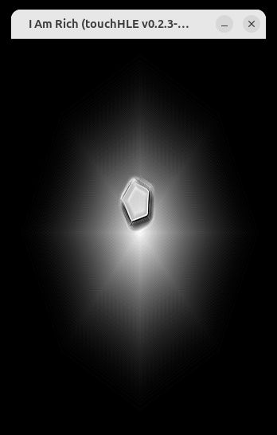
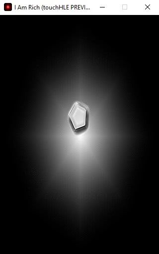

| App name | I Am Rich |
|---|---|
| Release year | 2008 |
| Developer/Publisher | Armin Heinrich |
| First reported | |
| First reported by | @nighto |
| Version number | Display name | Bundle identifier | Minimum iOS version | Best rating | Last updated | First reported by | |
|---|---|---|---|---|---|---|---|
| 1.0 | I Am Rich | 9C48YYZAC5.IAmRich | (not specified) | ⭐️ | @nighto |
| Version number | touchHLE version | Operating system | GPU | Scale hack supported? | Rating | Reported | Reported by | Remarks | Screenshot |
|---|---|---|---|---|---|---|---|---|---|
| 1.0 | v0.2.3-169-g55cf5c7d | Ubuntu 24.04 | AMD Radeon 860M | Couldn't test | ⭐️ | @nytr1xx | App opens with the launch screen in monochrome, before immediately crashing with error "Missing implementation for class UICachedDeviceWhiteColor!" | View | |
| 1.0 | v0.2.2-274-g88a9626 | Windows 10 | Intel(R) HD Graphics 620 | Didn't test | ⭐️ | @DaCringeyBaka | Doesn't crash upon being opened, but a B&W version of the picture shows up for a very brief time before the app hangs on a black screen. | View | |
| 1.0 | v0.2.0-65-gc46c7d7 | Windows 11 | NVIDIA Quadro T2000 | Couldn't test | ⭐️ | @nighto |
| Rating | Description |
|---|---|
| ⭐️ | Completely broken: app crashes immediately without any user interaction. |
| ⭐️⭐️ | Only (part of) the main menu, intro or similar is working. |
| ⭐️⭐️⭐️ | Some of the main content of the app works, but with major issues. |
| ⭐️⭐️⭐️⭐️ | The main content of the app works (e.g. entire game is playable) with only small issues. |
| ⭐️⭐️⭐️⭐️⭐️ | Everything works. The app is fully usable. |

